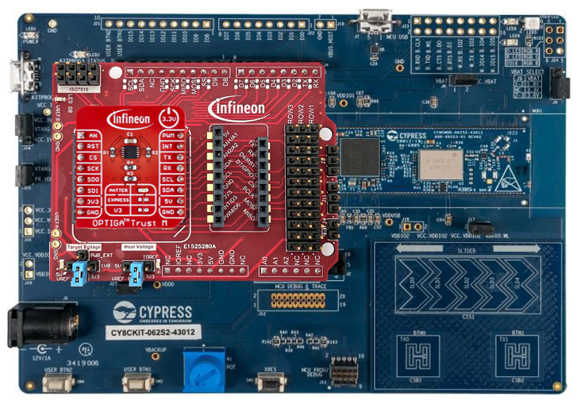

Enabling the provisioning mode for UART-to-I²C bridge
OPTIGA™ Trust M with PSOC™ 6 evaluation kits
To use the OPTIGA™ Trust Host Library for Python in combination with any OPTIGA™ Trust M device and a supported PSOC™ 6 evaluation kit, follow the instructions at ModusToolbox™ example application for OPTIGA™ Trust M data management to activate the provisioning mode on PSOC™ 6.
As an example, see the following combination of PSOC™ 62S2 Wi-Fi BT Pioneer Kit, OPTIGA™ Trust Adapter and an OPTIGA™ Trust M sample.
{kind=link}
Create a new ModusToolbox™ project via the “New Application” button.
Select
CY8CKIT-062S2-43012as BSP and press “Next”.
{kind=link}
Select the
OPTIGA™ Trust M Data and Certificates Managementexample and click on “Create”
{kind=link}
Flash and launch the program.
OPTIGA™ Trust M with XMC4700 Relax Kit
Prerequisite: Make sure you have SEGGER J-FLash Lite installed:
Make sure you have connected your Evaluation Kit as depicted below (USB Port X1002)
{kind=link}
Start SEGGER J-FLash Lite.
Click on Device to select a target device: Select Infineon as “Manufacturer” and XMC4700-2048 as “Device”, and then click “OK”.
{kind=link}
Select xmc4700 hex file (right click, Save) to be flashed under “Data File” and click on “Program Device”. It then shows the programming progress window.
{kind=link}
Once done make sure to change the connection of the USB cable to a different USB port located on the other side of the Evaluation Kit (USB Port X100)
{kind=link}